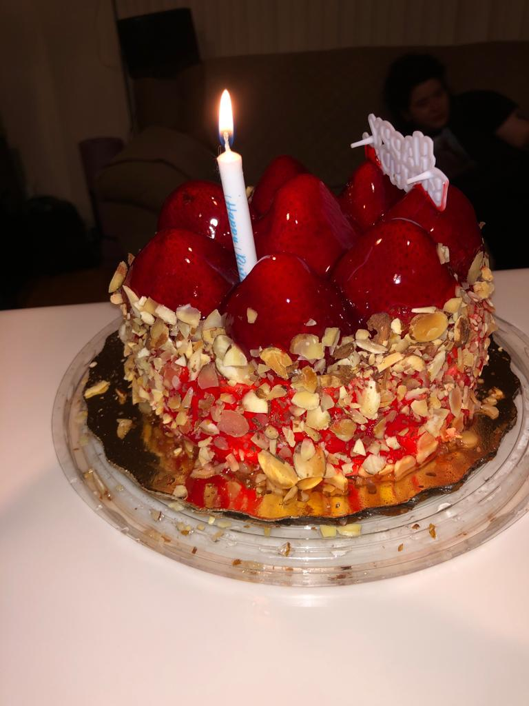
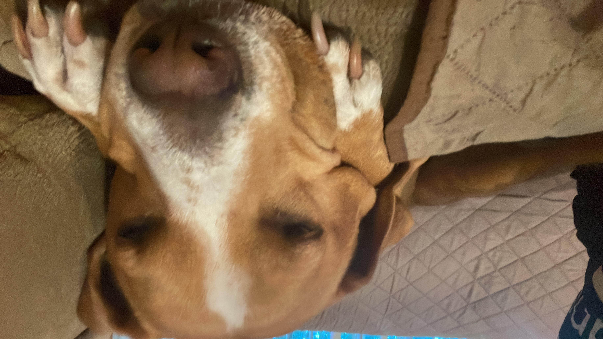

✦ Saturday 06.28.23 ✦
Hey ya'll!
It's the last day of June but I may as well write a little update. I'm moving from my physical journal to a digital one, and everything I write here is already written in my regular journal.
For a long time, I never talked about my birthday because I never got to enjoy one on my own. I thought that enjoying my birthdays was a lost cause, especially since I had spent a year going from hospital to hospital for my mental health and was isolated from the world in recovery. Thankfully, my family did everything they could to see me smile on my 18th birthday! I never thought I could be happy on a day like this, huh?
This year I took a summer trip to Florida with my mom, it was exciting and beautiful because we went to different theme parks and my favorite part, of course, the beach. We went to Cocoa Beach! Cocoa Beach is a Florida city south of Cape Canaveral Air Force Station. It’s a gateway to the Kennedy Space Center Visitor Complex, which has rockets and iconic artifacts. And man, I was just happy. We also went to St. Augustine to stay one night and have a good time, we ate pasta at an Italian restaurant. I often realize that falling in love with cities is a personality trait that I carry in my genetics.


Universal Studio was amazing and I went on all the rides and games! At the end of the day, I got a cute little Spide-Gwen plushie and we went to my aunt's house where I counted all the seashells I collected the previous few days at the beach. I decided I would put them in a jar to put on my kitty's altar... I hope she likes it. Mimi used to be a very playful cat and would play in the water, I hope those shells make her happy.
So far summer has been full of lots of walks on the beach and afternoons with my family... I can't help but feel that I miss Mimi, but then I think that I need to be strong and live even though she's gone. It sounds hard, but I have to face it sooner or later. Anyways! I have a couple of nice photos to show you all.


Thank you everyone for your birthday wishes! I'm so touched that so many folks remembered my birthday, and even went out of their way to send me lovely messages and even art! especially Sely... From the bottom of my heart, thank you!! My birthday was a blast. I thought I'd feel lonely and sad but the opposite was true. Friends, family, strangers, so many people went out of their way to be kind to me that day, so I didn't feel lonely at all. Sometimes it is hard for me to express how happy I am, but I feel that this day and the next ones will be unforgettable for me.
That's all for now... huh man, I need to stop programming and writing so late, it's going to be 4am soon and I can't stop writing! I remember those moments of my birthday and I just smile. Anyway, even my psychiatrist and therapist wished me happy birthday! I usually have a hard time writing journal entries, but when I start, I can't stop and it takes me too long. Here are some more photos! If you want to see more, you might be able to check them out in the blog section.


Bye bye!!